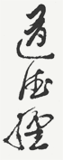

Перевод Яна Хин-шуна
Дао, которое может быть выражено словами, не есть постоянное дао. Имя, которое может быть названо, не есть постоянное имя. Безымянное есть начало неба и земли, обладающее именем — мать всех вещей.
Поэтому тот, кто свободен от страстей, видит чудесную тайну [дао], а кто имеет страсти, видит его только в конечной форме. Оба они* одного и того же происхождения, но с разными названиями. Вместе они называются глубочайшими. [Переход] от одного глубочайшего к другому — дверь ко всему чудесному.
* Безымянное и обладающее именем.
Когда все
в Поднебесной узнают, что прекрасное является прекрасным,
появляется и безобразное. Когда все узнают, что доброе является
добром, возникает и зло. Поэтому бытие и небытие порождают
друг друга, трудное и лёгкое создают друг друга, длинное
и короткое взаимно соотносятся, высокое и низкое взаимно
определяются, звуки, сливаясь, приходят в гармонию, предыдущее
и последующее следуют друг за другом. Поэтому
совершенномудрый, совершая дела, предпочитает недеяние; осуществляя
учение, не прибегает к словам; вызывая изменения вещей [он] не осуществляет их сам; создавая, не обладает [тем, что создано]; приводя в движение, не прилагает к этому усилий; успешно завершая [
Если не почитать мудрецов, то в народе не будет ссор. Если не ценить редких предметов, то не будет воров среди народа. Если не показывать того, что может вызвать зависть, то не будут волноваться сердца народа. Поэтому, управляя [страной], совершенномудрый делает сердца [подданных] пустыми, а желудки — полными. [Его управление] ослабляет их волю и укрепляет их кости. Оно постоянно стремится к тому, чтобы у народа не было знаний и страстей, а имеющие знания не смели бы действовать.
Осуществление недеяния всегда приносит спокойствие.
Дао пусто, но в применении неисчерпаемо. О глубочайшее! Оно кажется праотцем всех вещей.
Если притупить его проницательность, освободить его от хаотичности, умерить его блеск, уподобить его пылинке, то оно будет казаться ясно существующим. Я не знаю, чьё оно порождение, [я лишь знаю, что] оно предшествует небесному владыке.
Небо и земля не обладают человеколюбием* и предоставляют всем существам возможность жить собственной жизнью**. Совершенномудрый не обладает человеколюбием и предоставляет народу возможность жить собственной жизнью.
Разве пространство между небом и землёй не похоже на кузнечный мех? Чем больше [в нём] пустоты, тем дольше [он] действует, чем сильнее [в нём] движение, тем больше [из него] выходит [ветер].
Тот, кто много говорит, часто терпит неудачу, поэтому лучше соблюдать меру.
* Согласно Лао-цзы, все социальные явления, поступки людей должны быть подчинены естественной необходимости. Поэтому он отвергал конфуцианское понятие жэнь (человеколюбие), считая его чуждым сущностной природе человека, а требование его соблюдения – неоправданным вмешательством в жизнь общества.
** В оригинале содержатся два иероглифа «чу гоу», которые в одних комментариях трактуются как «трава» и «собака», а в других – «соломенная собака», которая по древнекитайскому обычаю используется при похоронах, после чего выбрасывается. В том и в другом случае «чу гоу» в данном контексте означает существа, в жизнь которых не вмешиваются ни небо, ни земля, ни совершенномудрый.
Превращения невидимого [дао] бесконечны. [Дао] — глубочайшие врата рождения. Глубочайшие врата рождения — корень неба и земли. [Оно] существует [вечно] подобно нескончаемой нити, и его действие неисчерпаемо.
Небо и земля — долговечны. Небо и земля долговечны потому, что они существуют не для себя. Вот почему они могут быть долговечными.
Поэтому совершенномудрый ставит себя позади других, благодаря чему он оказывается впереди. Он пренебрегает своей жизнью, и тем самым его жизнь сохраняется. Не происходит ли это от того, что он пренебрегает личными [интересами]? Напротив, [он действует] согласно своим личным [интересам].
Высшая добродетель подобна воде. Вода приносит пользу всем существам и не борется с [ними]. Она находится там, где люди не желали бы быть. Поэтому она похожа на дао.
[Человек, обладающий высшей добродетелью, так же как вода], должен селиться ближе к земле; его сердце должно следовать внутренним побуждениям; в отношениях с людьми он должен быть дружелюбным; в словах должен быть искренним; в управлении [страной] должен быть последовательным; в делах должен исходить из возможностей; в действиях должен учитывать время. Поскольку [он], так же как и вода, не борется с вещами, [он] не совершает ошибок.
Лучше ничего не делать, чем стремиться к тому, чтобы
Когда дело завершено, человек [должен] устраниться. В этом закон небесного дао.
Если душа и тело будут в единстве, можно ли сохранить его? Если сделать дух мягким, можно ли стать [бесстрастным] подобно новорождённому? Если созерцание станет чистым, возможны ли тогда заблуждения? Можно ли любить народ и управлять страной, не прибегая к мудрости? Возможны ли превращения в природе, если следовать мягкости? Возможно ли осуществление недеяния, если познать все взаимоотношения в природе?
Создавать и воспитывать [сущее]; создавая, не обладать [тем, что создано]; приводя в движение, не прилагать к этому усилий; руководя, не считать себя властелином — вот что называется глубочайшим дэ.
Тридцать спиц соединяются в одной ступице, [образуя колесо], но употребление колеса зависит от пустоты между [спицами].
Из глины делают сосуды, но употребление сосудов зависит
от пустоты в них. Пробивают двери и окна, чтобы сделать
дом, но пользование домом зависит от пустоты в нём. Вот
почему полезность [
Пять цветов притупляют зрение. Пять звуков притупляют слух. Пять вкусовых ощущений притупляют вкус*. Быстрая езда и охота волнуют сердце. Драгоценные вещи заставляют человека совершать преступления. Поэтому совершенномудрый стремится к тому, чтобы сделать жизнь сытой, а не к тому, чтобы иметь красивые вещи. Он отказывается от последнего и ограничивается первым.
* Пять цветов – желтый, красный, синий, белый, черный; пять звуков – пять вариаций гаммы в китайской музыке; пять вкусовых ощущений – сладкий, кислый, горький, острый, соленый. Здесь Лао-цзы предостерегает от стремления к роскоши, призывает к умеренности и скромности.
Слава и позор подобны страху. Знатность подобна великому несчастью в жизни. Что значит, слава и позор подобны страху? Это значит, что нижестоящие люди приобретают славу со страхом и теряют её также со страхом. Это и называется — слава и позор подобны страху.
Что значит, знатность подобна великому несчастью в жизни? Это значит, что я имею великое несчастье, потому что я [дорожу] самим собой. Когда я не буду дорожить самим собой, тогда у меня не будет и несчастья. Поэтому знатный, самоотверженно служа людям, может жить среди них. Гуманный, самоотверженно служа людям, может находиться среди них.
Смотрю на него и не вижу, а поэтому называю его невидимым. Слушаю его и не слышу, поэтому называю его неслышимым. Пытаюсь схватить его и не достигаю, поэтому называю его мельчайшим. Не надо стремиться узнать об источнике этого, потому что это едино. Его верх не освещён, его низ не затемнён. Оно бесконечно и не может быть названо. Оно снова возвращается к небытию. И вот называют его формой без форм, образом без существа. Поэтому называют его неясным и туманным. Встречаюсь с ним и не вижу лица его, следую за ним и не вижу спины его.
Придерживаясь древнего дао, чтобы овладеть существующими вещами, можно познать древнее начало. Это называется принципом дао.
В древности те, которые были способны к учёности, знали мельчайшие и тончайшие [вещи]. Но другим их глубина неведома. Поскольку она неведома, [я] произвольно даю [им] описание: они были робкими, как будто переходили зимой поток; они были нерешительными, как будто боялись своих соседей; они были важными, как гости; они были осторожными, как будто переходили по тающему льду; они были простыми подобно неотделанному дереву; они были необъятными подобно долине; они были непроницаемыми подобно мутной воде. Это были те, которые, соблюдая спокойствие, умели грязное сделать чистым. Это были те, которые своим умением сделать долговечное движение спокойным содействовали жизни. Они соблюдали дао и не желали многого. Не желая многого, они ограничивались тем, что существует, и не создавали нового.
Нужно сделать [своё сердце] предельно беспристрастным, твёрдо сохранять покой, и тогда все вещи будут изменяться сами собой, а нам останется лишь созерцать их возвращение. [В мире] — большое разнообразие вещей, но [все они] возвращаются к своему началу. Возвращение к началу называется покоем, а покой называется возвращением к сущности. Возвращение к сущности называется постоянством. Знание постоянства называется [достижением] ясности, а незнание постоянства приводит к беспорядку и [в результате] к злу. Знающий постоянство становится совершенным; тот, кто достиг совершенства, становится справедливым; тот, кто обрёл справедливость, становится государём. Тот, кто становится государём, следует небу. Тот, кто следует небу, следует дао. Тот, кто следует дао, вечен и до конца жизни [такой государь] не будет подвергаться опасности.
Лучший правитель тот, о котором народ знает лишь то, что он существует. Несколько хуже те правители, которые требуют от народа их любить и возвышать. Ещё хуже те правители, которых народ боится, и хуже всех те правители, которых народ презирает. Поэтому, кто не заслуживает доверия, не пользуется доверием [у людей]. Кто вдумчив и сдержан в словах, успешно совершает дела, и народ говорит, что он следует естественности.
Когда устранили великое дао, появились «человеколюбие» и «справедливость». Когда появилось мудрствование, возникло и великое лицемерие. Когда шесть родственников* в раздоре, тогда появляются «сыновняя почтительность» и «отцовская любовь». Когда в государстве царит беспорядок, тогда появляются «верные слуги»**.
* Шесть родственников – отец, мать, старший и младший братья, муж, жена.
** Честные и преданные государственные деятели.
Когда будут устранены мудрствование и учёность, народ будет счастливее во сто крат; когда будут устранены человеколюбие и «справедливость», народ возвратится к сыновней почтительности и отцовской любви; когда будут уничтожены хитрость и нажива, исчезнут воры и разбойники. Все эти три вещи [происходят] от недостатка знаний. Поэтому нужно указывать людям, что они должны быть простыми и скромными, уменьшать личные [желания] и освобождаться от страстей.
Когда будет уничтожена учёность, тогда не будет и печали. Как ничтожна разница между обещанием и лестью и как велика разница между добром и злом! Надо избегать того, чего люди боятся.
О! Как хаотичен [мир], где всё ещё не установлен порядок. Все люди радостны, как будто присутствуют на торжественном угощении или празднуют наступление весны. Только я один спокоен и не выставляю себя на свет. Я подобен ребёнку, который не явился в мир. О! Я несусь! Кажется, нет места, где мог бы остановиться. Все люди полны желаний, только я один подобен тому, кто отказался от всего. Я сердце глупого человека. О, как оно пусто! Все люди полны света. Только я один подобен тому, кто погружён во мрак. Все люди пытливы, только я один равнодушен. Я подобен тому, кто несётся в мирском просторе и не знает, где ему остановиться. Все люди проявляют свою способность, и только я один похож на глупого и низкого. Только я один отличаюсь от других тем, что вижу основу в еде.
Содержание великого дэ подчиняется только дао. Дао бестелесно. Дао туманно и неопределённо. Однако в его туманности и неопределённости содержатся образы. Оно туманно и неопределённо. Однако в его туманности и неопределённости скрыты вещи. Оно глубоко и темно. Однако в его глубине и темноте скрыты тончайшие частицы. Эти тончайшие частицы обладают высшей действительностью и достоверностью.
С древних времён до наших дней его имя не исчезает. Только следуя ему, можно познать начало всех вещей. Каким образом мы познаём начало всех вещей? Только благодаря ему.
В древности говорили: «Ущербное становится совершенным, кривое — прямым, пустое — наполненным, ветхое сменяется новым; стремясь к малому, достигаешь многого; стремление получить многое ведёт к заблуждениям». Поэтому совершенномудрый внемлет этому поучению, коему необходимо следовать в Поднебесной. Совершенномудрый исходит не только из того, что сам видит, поэтому может видеть ясно; он не считает правым только себя, поэтому может обладать истиной; он не прославляет себя, поэтому имеет заслуженную славу; он не возвышает себя, поэтому он старший среди других. Он ничему не противоборствует, поэтому он непобедим в Поднебесной.
Слова древних: «Ущербное становится совершенным…» — разве это пустые слова? Они действительно указывают человеку путь к [истинному] совершенству.
Нужно
меньше говорить, следовать естественности. Быстрый ветер
не продолжается всё утро, сильный дождь не продержится весь
день. Кто делает всё это? Небо и земля. Даже небо и земля
не могут сделать
Кто поднялся на цыпочки, не может [долго] стоять. Кто делает большие шаги, не может [долго] идти. Кто сам себя выставляет на свет, тот не блестит. Кто сам себя восхваляет, тот не добудет славы. Кто нападает, не достигает успеха. Кто сам себя возвышает, не может стать старшим среди других. Если исходить из дао, всё это называется лишним желанием и бесполезным поведением. Таких ненавидят все существа. Поэтому человек, обладающий дао, не делает этого.
Вот вещь, в хаосе возникающая, прежде неба и земли родившаяся! О беззвучная! О лишённая формы! Одиноко стоит она и не изменяется. Повсюду действует и не имеет преград. Её можно считать матерью Поднебесной. Я не знаю её имени. Обозначая иероглифом, назову её дао; произвольно давая ей имя, назову её великое. Великое — оно в бесконечном движении. Находящееся в бесконечном движении не достигает предела. Не достигая предела, оно возвращается [к своему истоку]. Вот почему велико дао, велико небо, велика земля, велик также и государь. Во Вселенной имеются четыре великих, и среди них — государь.
Человек следует [законам] земли. Земля следует [законам] неба. Небо следует [законам] дао, а дао следует самому себе.
Тяжёлое является основой лёгкого. Покой есть главное в движении. Поэтому совершенномудрый, шагая весь день, не отходит от [телеги] с тяжёлым грузом. Хотя он живёт прекрасной жизнью, но он в неё не погружается. Почему властитель десяти тысяч колесниц, занятый собой, так пренебрежительно смотрит на мир? Пренебрежение разрушает его основу, а его торопливость приводит к потере власти.
Умеющий шагать не оставляет следов. Умеющий говорить не допускает ошибок. Кто умеет считать, тот не пользуется инструментом для счёта. Кто умеет закрывать двери, не употребляет затвор и закрывает их так крепко, что открыть их невозможно. Кто умеет завязывать узлы, не употребляет верёвку, [но завязывает так прочно], что развязать невозможно. Поэтому совершенномудрый постоянно умело спасает людей и не покидает их. Он всегда умеет спасать существа, поэтому он не покидает их. Это называется глубокой мудростью. Таким образом, добродетель является учителем недобрых, а недобрые — её опорой. Если [недобрые] не ценят своего учителя и добродетель не любит свою опору, то они, хотя и [считают себя] разумными, погружены в слепоту. Вот что наиболее важно и глубоко.
Кто зная свою храбрость, сохраняет скромность, тот [подобно] горному ручью становится [главным] в стране. Кто стал главным в стране, тот не покидает постоянное дэ и возвращается к состоянию младенца. Кто, зная праздничное, сохраняет для себя будничное, тот становится примером для всех. Кто стал примером для всех, тот не отрывается от постоянного дэ и возвращается к изначальному. Кто, зная свою славу, сохраняет для себя безвестность, тот становится главным в стране. Кто стал главным в стране, тот достигает совершенства в постоянном дэ и возвращается к естественности. Когда естественность распадается, она превращается в средство, при помощи которого совершенномудрый становится вождём и великий порядок не разрушается.
Если
Поэтому одни существа идут, другие — следуют за ними; одни расцветают, другие высыхают; одни укрепляются, другие слабеют; одни создаются, другие разрушаются. Поэтому совершенномудрый отказывается от излишеств, устраняет роскошь и расточительность.
Кто служит главе народа посредством дао, не покоряет другие страны при помощи войск, ибо это может обратиться против него. Где побывали войска, там растут терновник и колючки. После больших войн наступают голодные годы.
Искусный [полководец] побеждает и на этом останавливается, и он не осмеливается осуществлять насилие. Он побеждает и себя не прославляет. Он побеждает и не нападает. Он побеждает и не гордится. Он побеждает потому, что к этому его вынуждают. Он побеждает, но он не воинствен.
Когда существо, полное сил, становится старым, то это называется [отсутствием] дао. Кто не соблюдает дао, погибнет раньше времени.
Хорошее войско — средство, [порождающее] несчастье, его ненавидят все существа. Поэтому человек, следующий дао, его не употребляет.
Благородный [правитель] во время мира предпочитает быть уступчивым [в отношении соседних стран] и лишь на войне применяет насилие. Войско — орудие несчастья, поэтому благородный [правитель] не стремится использовать его, он применяет его, только когда его к этому вынуждают. Главное состоит в том, чтобы соблюдать спокойствие, а в случае победы себя не прославлять. Прославлять себя победой — это значит радоваться убийству людей. Тот, кто радуется убийству людей, не может завоевать сочувствия в стране. Благополучие создаётся уважением, а несчастье происходит от насилия.
Слева строятся военачальники флангов, справа стоит полководец. Говорят, что их нужно встретить похоронной процессией. Если убивают многих людей, то об этом нужно горько плакать. Победу следует отмечать похоронной процессией.
Дао вечно и безымянно. Хотя оно ничтожно, но никто в мире не может его подчинить себе. Если знать и государи могут его соблюдать, то все существа сами становятся спокойными. Тогда небо и земля сливаются в гармонии, наступают счастье и благополучие, а народ без приказания успокаивается.
При установлении порядка появились имена. Поскольку возникли имена, нужно знать предел [их употребления]. Знание предела позволяет избавиться от опасности*.
Когда дао находится в мире, [всё сущее вливается в него], подобно тому как горные ручьи текут к рекам и морям.
* Слишком много законов, с точки зрения Лао-цзы, опасно для государства.
Знающий людей благоразумен. Знающий себя просвещён. Побеждающий людей силён. Побеждающий самого себя могуществен. Знающий достаток богат. Кто действует с упорством, обладает волей. Кто не теряет свою природу, долговечен. Кто умер, но не забыт, тот бессмертен.
Великое дао растекается повсюду. Оно может находиться и вправо, и влево. Благодаря ему всё сущее рождается и не прекращает [своего роста]. Оно совершает подвиги, но славы себе не желает. С любовью воспитывая все существа, оно не считает себя их властелином. Оно никогда не имеет собственных желаний, поэтому его можно назвать ничтожным. Всё сущее возвращается к нему, но оно не рассматривает себя их властелином. Его можно назвать великим. Оно становится великим, потому что никогда не считает себя таковым.
К тому, кто представляет собой великий образ [дао], приходит весь народ. Люди приходят, и он им не причиняет вреда. Он приносит им мир, спокойствие, музыку и пищу. Даже путешественник у него останавливается.
Когда дао выходит изо рта, оно пресное, безвкусное. Оно незримо, и его нельзя услышать. В действии оно неисчерпаемо.
Чтобы
нечто сжать, необходимо прежде расширить его. Чтобы нечто ослабить,
нужно прежде укрепить его. Чтобы нечто уничтожить, необходимо прежде
дать ему расцвести. Чтобы нечто у
Дао постоянно осуществляет недеяние, однако нет ничего такого, что бы оно не делало. Если знать и государи будут его соблюдать, то все существа будут изменяться сами собой. Если те, которые изменяются, захотят действовать, то я буду подавлять их при помощи простого бытия, не обладающего именем. Не обладающее именем — простое бытие — для себя ничего не желает. Отсутствие желания приносит покой, и тогда порядок в стране сам собой установится.
Человек с высшим дэ не стремится делать добрые дела, поэтому он добродетелен; человек с низшим дэ не оставляет [намерения] совершать добрые дела, поэтому он не добродетелен; человек с высшим дэ бездеятелен и осуществляет недеяние; человек с низшим дэ деятелен, и его действия нарочиты; обладающий высшим человеколюбием действует, осуществляя недеяние; человек высшей справедливости деятелен, и его действия нарочиты: человек, во всём соблюдающий ритуал, действует, [надеясь на взаимность]. Если он не встречает взаимности, то он прибегает к наказаниям. Вот почему дэ появляется только после утраты дао; человеколюбие — после утраты дэ; справедливость — после утраты человеколюбия; ритуал — после утраты справедливости. Ритуал — это признак отсутствия доверия и преданности. [В ритуале] — начало смуты.
Внешний вид — это цветок дао, начало невежества. Поэтому [великий человек] берёт существенное и оставляет ничтожное. Он берёт плод и отбрасывает его цветок. Он предпочитает первое и отказывается от второго.
Вот те, которые с древних времён находятся в единстве. Благодаря единству небо стало чистым, земля — незыблемой, дух — чутким, долина — цветущей и начали рождаться все существа. Благодаря единству знать и государи становятся образцом в мире. Вот что создаёт единство.
Если небо не чисто, оно разрушается; если земля зыбка, она раскалывается; если дух не чуток, он исчезает; если долины не цветут, они превращаются в пустыню; если вещи не рождаются, они исчезают; если знать и государи не являются примером благородства, они будут свергнуты.
Незнатные являются основой для знатных, а низкое — основанием для высокого. Поэтому знать и государи сами называют себя «одинокими», «сирыми», «несчастливыми». Это происходит оттого, что они не рассматривают незнатных как свою основу. Это ложный путь. Если разобрать колесницу, от неё ничего не останется. Нельзя считать себя «драгоценным», как яшма, а нужно быть простым, как камень.
Превращение в противоположное есть действие дао, слабость есть свойство дао. В мире все вещи рождаются в бытии, а бытие рождается в небытии.
Человек высшей учёности, узнав о дао, стремится к его осуществлению. Человек средней учёности, узнав о дао, то соблюдает его, то его нарушает. Человек низшей учёности, узнав о дао, подвергает его насмешке. Если оно не подвергалось бы насмешке, не являлось бы дао. Поэтому существует поговорка: кто узнает дао, похож на тёмного; кто проникает в дао, похож на отступающего; кто на высоте дао, похож на заблуждающегося; человек высшей добродетели похож на простого; великий просвещённый похож на презираемого; безграничная добродетельность похожа на её недостаток; распространение добродетельности похоже на её расхищение; истинная правда похожа на её отсутствие.
Великий квадрат не имеет углов; большой сосуд долго изготовляется; сильный звук нельзя услышать; великий образ не имеет формы.
Дао скрыто [от нас] и не имеет имени. Но только оно способно помочь [всем существам] и привести их к совершенству.
Дао рождает одно, одно рождает два, два рождают три, а три рождают все существа*. Все существа носят в себе инь и ян, наполнены ци и образуют гармонию.
Люди не любят [имена] «одинокий», «сирый», «несчастливый». Между тем гуны и ваны этими [именами] называют себя. Поэтому вещи возвышаются, когда их принижают, и принижаются, когда их возвышают.
Чему учат люди, тому обучаю и я: сильные и жестокие не умирают своей смертью. Этим я руководствуюсь в своём обучении.
В Поднебесной самые слабые побеждают самых сильных. Небытие проникает везде и всюду. Вот почему я знаю пользу от недеяния. В Поднебесной нет ничего, что можно было бы сравнивать с учением, не прибегающим к словам, и пользой от недеяния.
Что ближе — слава или жизнь? Что дороже — жизнь или богатство? Что тяжелее пережить — приобретение или потерю? Кто многое сберегает, тот понесёт большие потери. Кто много накапливает, тот потерпит большие убытки. Кто знает меру, у того не будет неудачи. Кто знает предел, тот не будет подвергаться опасности. Он может стать долговечным.
Великое совершенство похоже на несовершенное, но его действие [не может быть] нарушено; великая полнота похожа на пустоту, но её действие неисчерпаемо. Великая прямота похожа на кривизну; великое остроумие похоже на глупость; великий оратор похож на заику.
Ходьба побеждает холод, покой побеждает жару. Спокойствие создаёт порядок в мире.
Когда в стране существует дао, лошади унавоживают землю; когда в стране отсутствует дао, боевые кони пасутся в окрестностях. Нет больше несчастья, чем незнание границы своей страсти, и нет большей опасности, чем стремление к приобретению [богатств]. Поэтому, кто умеет удовлетворяться, всегда доволен [своей жизнью].
Не выходя со двора, можно познать мир. Не выглядывая из окна, можно видеть естественное дао. Чем дальше идёшь, тем меньше познаёшь. Поэтому совершенномудрый не ходит, но познаёт [всё]. Не видя [вещей], он проникает в их [сущность]. Не действуя, он добивается успеха.
Кто учится, с каждым днём увеличивает [свои знания]. Кто служит дао, изо дня в день уменьшает [свои желания]. В непрерывном уменьшении [человек] доходит до недеяния. Нет ничего такого, что бы не делало недеяние. Поэтому овладение Поднебесной всегда осуществляется посредством недеяния. Кто действует, не в состоянии овладеть Поднебесной.
Совершенномудрый не имеет постоянного сердца. Его сердце состоит из сердец народа. Добрым я делаю добро и недобрым также делаю добро. Таким образом и воспитывается добродетель. Искренним я верен и неискренним также верен. Таким образом и воспитывается искренность.
Совершенномудрый живёт в мире спокойно и в своём сердце собирает мнения народа. Он смотрит на народ, как на своих детей.
[Существа] рождаются и умирают. Из десяти человек три [идут] к жизни, три — к смерти. Из каждых десяти ещё имеются три человека, которые умирают от своих деяний. Почему это так? Это происходит оттого, что у них слишком сильно стремление к жизни.
Я слышал, что, кто умеет овладевать жизнью, идя по земле, не боится носорога и тигра, вступая в битву, не боится вооружённых солдат. Носорогу некуда вонзить в него свой рог, тигру негде наложить на него свои когти, а солдатам некуда поразить его мечём. В чём причина? Это происходит оттого, что для него не существует смерти.
Дао рождает [вещи], дэ вскармливает [их]. Вещи оформляются, формы завершаются. Поэтому нет вещи, которая не почитала бы дао и не ценила бы дэ. Дао почитаемо, дэ ценимо, потому что они не отдают приказаний, а следуют естественности.
Дао рождает [вещи], дэ вскармливает [их], взращивает их, воспитывает их, совершенствует их, делает их зрелыми, ухаживает за ними, поддерживает их. Создавать и не присваивать, творить и не хвалиться, являясь старшим, не повелевать — вот что называется глубочайшим дэ.
В Поднебесной имеется начало, и оно — мать Поднебесной. Когда будет постигнута мать, то можно узнать и её детей. Когда уже известны её дети, то снова нужно помнить о их матери. В таком случае до конца жизни [у человека] не будет опасности. Если [человек] оставляет свои желания и освобождается от страстей, то до конца жизни не будет у него усталости. Если же он распускает свои страсти и поглощён своими делами, то не будет спасения [от бед].
Видение мельчайшего называется зоркостью. Сохранение слабости называется могуществом. Следовать сиянию [дао], постигать его глубочайший смысл, не навлекать [на людей] несчастья — это и есть соблюдение постоянства.
Если бы я владел знанием, то шёл бы по большой дороге. Единственная вещь, которой я боюсь, — это узкие тропинки. Большая дорога совершенно ровна, но народ любит тропинки.
Если дворец роскошен, то поля покрыты сорняками и хлебохранилища совершенно пусты. [Знать] одевается в роскошные ткани, носит острые мечи, не удовлетворяется [обычной] пищей и накапливает излишние богатства. Всё это называется разбоем и бахвальством. Оно является нарушением дао.
Кто умеет крепко стоять, того нельзя опрокинуть. Кто умеет опереться, того нельзя свалить. Сыновья и внуки вечно сохранят память о нём.
Кто совершенствует [дао] внутри себя, у того добродетель становится искренней. Кто совершенствует [дао] в семье, у того добродетель становится обильной. Кто совершенствует [дао] в деревне, у того добродетель становится обширной. Кто совершенствует [дао] в царстве, у того добродетель становится богатой. Кто совершенствует [дао] в Поднебесной, у того добродетель становится всеобщей.
По себе можно познать других; по одной семье можно познать остальные; по одной деревне можно познать остальные; по одному царству можно познать другие; по одной стране можно познать всю Поднебесную. Каким образом я узнаю, что Поднебесная такова? Поступая так.
Кто содержит в себе совершенное дэ, тот похож на новорождённого. Ядовитые насекомые и змеи его не ужалят, свирепые звери его не схватят, хищные птицы его не заклюют. Кости у него мягкие, мышцы слабые, но он держит [дао] крепко. Не зная союза двух полов, он обладает животворящей способностью. Он очень чуток. Он кричит весь день, и его голос не изменяется. Он совершенно гармоничен.
Знание гармонии называется постоянством. Знание постоянства называется мудростью. Обогащение жизни называется счастьем. Стремление управлять чувствами называется упорством. Существо, полное сил, стареет — это называется нарушением дао. Кто дао не соблюдает, тот погибает раньше времени.
Тот, кто знает, не говорит. Тот, кто говорит, не знает. То, что оставляет свои желания, отказывается от страстей, притупляет свою проницательность, освобождает себя от хаотичности, умеряет свой блеск, уподобляет себя пылинке, представляет собой глубочайшее. Его нельзя приблизить для того, чтобы с ним сродниться; его нельзя приблизить для того, чтобы им пренебрегать; его нельзя приблизить для того, чтобы им воспользоваться; его нельзя приблизить для того, чтобы его возвысить; его нельзя приблизить для того, чтобы его унизить. Вот почему оно уважаемо в Поднебесной.
Страна управляется справедливостью, война ведётся хитростью. Поднебесную получают во владение посредством недеяния. Откуда я знаю всё это? Вот откуда: когда в стране много запретительных законов, народ становится бедным. Когда у народа много острого оружия, в стране увеличиваются смуты. Когда много искусных мастеров, умножаются редкие предметы. Когда растут законы и приказы, увеличивается число воров и разбойников.
Поэтому совершенномудрый говорит: «Если я не действую, народ будет находиться в самоизменении; если я спокоен, народ сам будет исправляться. Если я пассивен, народ сам становится богатым; если я не имею страстей, народ становится простодушным».
Когда правительство спокойно, народ становится простодушным. Когда правительство деятельно, народ становится несчастным. О несчастье! Оно является опорой счастья. О счастье! В нем заключено несчастье. Кто знает их границы? Они не имеют постоянства. Справедливость снова превращается в хитрость, добро — в зло. Человек уже давно находится в заблуждении. Поэтому совершенномудрый справедлив и не отнимает ничего у другого. Он бескорыстен и не вредит другим. Он правдив и не делает ничего плохого. Он светел, но не желает блестеть.
Управляя людьми и служа небу*, лучше всего соблюдать воздержание. Воздержание должно стать главной заботой. Оно называется совершенствованием дэ. Совершенствование дэ — всепобеждающе. Всепобеждающее обладает неисчерпаемой силой. Неисчерпаемая сила дает возможность овладеть страной.
Начало, при помощи которого управляется страна, долговечно и называется глубоким и прочным, вечно существующим дао.
* Небо у Лао-цзы тожденственно с дао, означающим естественность вещей. Вообще понятие дао имеет у Лао-цзы ярко выраженное онтологическое содержание, это – вечное, неизменное, непознаваемое, бесформенное начало. Лао-цзы рассматривает его как подлинную основу вещей и явлений.
Управление большим царством напоминает приготовление блюда из мелких рыб*. Если Поднебесной управлять, следуя дао, то злые духи [умерших] не будут действовать. Но злые духи не только не будут действовать, они также не смогут вредить людям. Не только они не смогут вредить людям, но и совершенномудрые не смогут вредить людям. Поскольку и те и другие не смогут вредить людям, их дэ соединятся друг с другом.
* Приготовление этого блюда требует от повара спокойствия и осторожности.
Великое царство — это низовье реки, узел Поднебесной, самка Поднебесной. Самка всегда невозмутимостью одолевает самца, а по своей невозмутимости [она] стоит ниже [самца]. Поэтому великое царство располагает к себе маленькое тем, что ставит себя ниже последнего, а маленькое царство завоевывает симпатию великого царства тем, что стоит ниже последнего. Поэтому располагают к себе либо тем, что ставят себя ниже, либо тем, что сами по себе ниже. Пусть великое царство будет желать не больше того, чтобы все одинаково были накормлены, а малое царство пусть будет желать не больше того, чтобы служить людям. Тогда оба получат то, чего они желают. Великому полагается быть внизу.
Дао — глубокая [основа] всех вещей. Оно сокровище добрых и защита недобрых людей. Красивые слова можно произносить публично, доброе поведение можно распространять на людей. Но зачем же покидать недобрых людей? В таком случае для чего же выдвигают государя и назначают ему трех советников?
Государь и советники хотя и имеют драгоценные камни и могут ездить на колесницах, но лучше будет им спокойно следовать дао.
Почему в древности ценили дао? В то время люди не стремились к приобретению богатств и преступления прощались. Поэтому [дао] в Поднебесной ценилось дорого.
Нужно осуществлять недеяние, соблюдать спокойствие и вкушать безвкусное. Великое состоит из малого, а многое — из немногого. На ненависть нужно отвечать добром.
Преодоление трудного начинается с лёгкого, осуществление великого начинается с малого, ибо в мире трудное образуется из лёгкого, а великое — из малого. Поэтому совершенномудрый начинает не с великого, тем самым он совершает великое. Кто много обещает, тот не заслуживает доверия. Где много лёгких дел, там много и трудных. Поэтому совершенномудрый относится к делу, как к трудному, поэтому он не испытывает трудности.
То, что спокойно, легко сохранить. То, что ещё не показало признаков, легко направить. То, что слабо, легко разделить. То, что мелко, легко рассеять. Действие надо начать с того, чего ещё нет. Наведение порядка надо начать тогда, когда ещё нет смуты. Ибо большое дерево вырастает из маленького, девятиэтажная башня начинает строиться из горстки земли, путешествие в тысячу ли начинается с одного шага.
Кто действует — потерпит неудачу. Кто
В древности те, кто следовал дао, не просвещали народ, а делали его невежественным. Трудно управлять народом, когда у него много знаний. Поэтому управление страной при помощи знаний приносит стране несчастье, а без их помощи приводит страну к счастью. Кто знает эти две вещи, тот становится примером для других. Знание этого примера есть знание глубочайшего дэ. Глубочайшее дэ, оно и глубоко и далеко. Оно противоположно всем существам, но приводит их к полному соответствию [с ним].
Реки и моря потому могут властвовать над равнинами, что они способны стекать вниз. Поэтому они властвуют над равнинами.
Когда [совершенномудрый] желает возвыситься над народом, он должен ставить себя ниже других. Когда он желает быть впереди людей, он должен ставить себя позади других. Поэтому хотя он и стоит над народом, но народу он не в тягость; хотя он находится впереди, народ ему не вредит. Поэтому люди с радостью его выдвигают и от него не отворачиваются. Он не борется, благодаря чему он в мире непобедим.
Все говорят о том, что моё дао велико и не уменьшается. Если бы оно уменьшилось, то после долгого времени оно стало бы маленьким. Не уменьшается потому, что оно является великим.
Я имею три сокровища, которыми дорожу: первое — это человеколюбие, второе — бережливость, а третье состоит в том, что я не смею быть впереди других. Я человеколюбив, поэтому могу стать храбрым. Я бережлив, поэтому могу быть щедрым. Я не смею быть впереди других поэтому могу стать умным вождем.
Кто храбр без человеколюбия, щедр без бережливости, находясь впереди, отталкивает тех, кто находится позади, тот погибает. Кто ведёт войну человеколюбиво, побеждает, и возведённая им оборона неприступна. Небо его спасает, человеколюбие его охраняет.
Умный полководец не бывает воинствен. Умелый воин не бывает гневен. Умеющий побеждать врага не нападает. Умеющий управлять людьми, не ставит себя в низкое положение. Это я называю дэ, избегающее борьбы. Это сила в управлении людьми. Это значит следовать природе и древнему началу [дао].
Военное искусство гласит: я не смею первым начинать, я должен ожидать. Я не смею наступать хотя бы на вершок вперед, а отступаю на аршин назад. Это называется действием посредством недеяния, ударом без усилия. В этом случае не будет врага и я могу обходиться без солдат. Нет беды тяжелее, чем недооценивать противника. Недооценка противника повредит моему сокровенному средству [дао]. В результате сражений те, кто скорбит, одерживают победу.
Мои слова легко понять и легко осуществить. Но люди не могут понять и не могут осуществлять. В словах имеется начало, в делах имеется главное. Поскольку люди их не знают, то они не знают и меня. Когда меня мало знают, тогда я дорог. Поэтому совершенномудрый подобен тому, кто одевается в грубые ткани, а при себе держит яшму.
Кто, имея знания, делает вид, что не знает, тот выше всех. Кто, не имея знаний, делает вид, что знает, тот болен. Кто, будучи больным, считает себя больным, тот не является больным. Совершенномудрый не болен. Будучи больным, он считает себя больным, поэтому он не болен.
Когда народ не боится могущественных, тогда приходит могущество. Не тесните его жилища, не презирайте его жизни. Кто не презирает [народа], тот не будет презрен [народом]. Поэтому совершенномудрый, зная себя, себя не выставляет. Он любит себя и себя не возвышает. Он отказывается от самолюбия и предпочитает невозвышение.
Кто храбр и воинствен — погибает, кто храбр и не воинствен — будет жить. Эти две вещи означают: одна — пользу, а другая — вред. Кто знает причины того, что небо ненавидит [воинственных]? Объяснить это трудно и совершенномудрому.
Небесное дао не борется, но умеет побеждать. Оно не говорит, но умеет отвечать. Оно само приходит. Оно спокойно и умеет управлять [вещами]. Сеть природы редка, но ничего не пропускает.
Если народ не боится смерти, то зачем же угрожать ему смертью? Кто заставляет людей бояться смерти считает это занятие увлекательным, того я захвачу и уничтожу. Кто осмеливается так действовать?
Всегда существует носитель смерти, который убивает. А если кто его заменит — это значит заменит великого мастера. Кто, заменяя великого мастера, рубит [топором], повредит свою руку.
Народ голодает оттого, что власти берут слишком много налогов. Вот почему [народ] голодает. Трудно управлять народом оттого, что власти слишком деятельны. Вот почему трудно управлять. Народ презирает смерть оттого, что у него слишком сильно стремление к жизни. Вот почему презирают смерть. Тот, кто пренебрегает своей жизнью, тем самым ценит свою жизнь.
Человек при своем рождении нежен и слаб, а при наступлении смерти твёрд и крепок. Все существа и растения при своем рождении нежные и слабые, а при гибели сухие и гнилые. Твердое и крепкое — это то, что погибает, а нежное и слабое — это то, что начинает жить. Поэтому могущественное войско не побеждает и крепкое дерево гибнет. Сильное и могущественное не имеют того преимущества, какое имеют нежное и слабое.
Небесное дао напоминает натягивание лука. Когда понижается его верхняя часть, поднимается нижняя. Оно отнимает лишнее и отдаёт отнятое тому, кто в нем нуждается. Небесное дао отнимает у богатых и отдаёт бедным то, что у них отнято. Человеческое же дао — наоборот. Оно отнимает у бедных и отдаёт богатым то, что отнято. Кто может отдать другим всё лишнее? Это могут сделать только те, которые следуют дао. Поэтому совершенномудрый делает и не пользуется тем, что сделано, совершает подвиги и себя не прославляет. Он благороден потому, что у него нет страстей.
Вода — это самое мягкое и самое слабое существо в мире, но в преодолении твёрдого и крепкого она непобедима, и на свете нет ей равного.
Слабые побеждают сильных, мягкое преодолевает твёрдое. Это знают все, но люди не могут это осуществлять. Поэтому совершенномудрый говорит: «Кто принял на себя унижение страны — становится государём, и, кто принял на себя несчастье страны — становится властителем».
Правдивые слова похожи на свою противоположность.
После успокоения большого возмущения непременно останутся его последствия. Как можно назвать это добром? Поэтому совершенномудрый даёт клятву, что он не будет никого порицать. Добрые стремятся к соглашению, а недобрые — к вымогательству. Небесное дао относится ко всем одинаково, оно всегда на стороне добрых.
Пусть государство будет маленьким, а население редким. Если [в государстве] имеются различные орудия, не надо их использовать. Пусть люди до конца своей жизни не уходят далеко [от своих мест]. Если [в государстве] имеются лодки и колесницы, не надо их употреблять. Даже если имеются воины, не надо их выставлять. Пусть народ снова начинает плести узелки и употреблять их вместо письма. Пусть его пища будет вкусной, одеяние красивым, жилище удобным, а жизнь радостной. Пусть соседние государства смотрят друг на друга, слушают друг у друга пение петухов и лай собак, а люди до самой старости и смерти не посещают друг друга.
Верные слова не изящны. Красивые слова не заслуживают доверия. Добрый не красноречив. Красноречивый не может быть добрым. Знающий не доказывает, доказывающий не знает.
Совершенномудрый ничего не накапливает. Он все делает для людей и все отдаёт другим. Небесное дао приносит всем существам пользу и им не вредит. Дао совершенномудрого — это деяние без борьбы.
